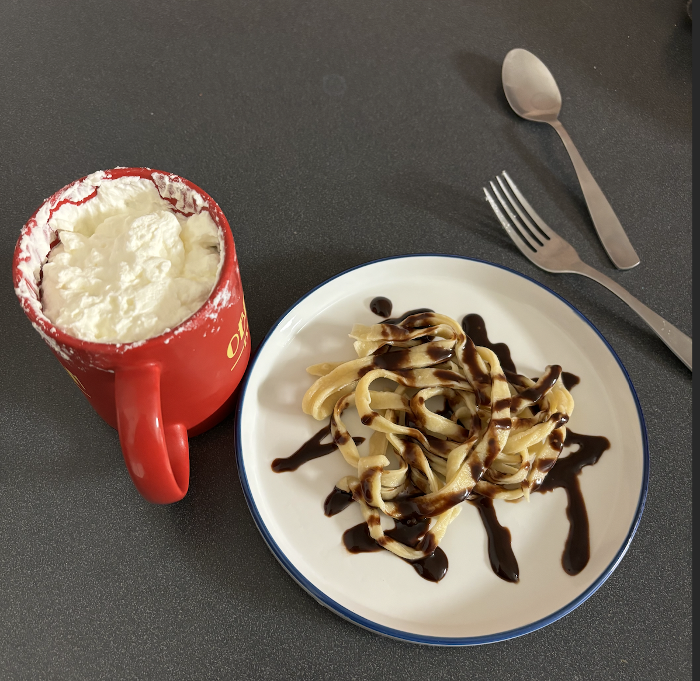

I can't recall when the idea for dessert pasta first came to me, but I remember it involved strawberries and cream. I don't think I would, at the time, have phrased it like so, however. I only became aware of "strawberries and cream" as a coherent unit of food at some point later when, walking through the living room, I heard my father mention something about how at Wimbledon, people were popping their champagne corks during the match, and that the game authorities were angry about this. It turns out, just as you get a footlong hot dog with sauerkraut and dijon mustard with an extra large Pepsi at a baseball game, at Wimbledon you drink champagne and eat strawberries and cream. Figures. I wonder if they come in a brown cardstock box, or perhaps a white cardstock box that is slightly glossy on the outside, less so than photo paper but more so than silt.
In any case, when the idea for dessert pasta first came to me as a suitor in the night, I more likely thought of "strawberries... yeah, and also cream" or even "cream and strawberries" rather than "strawberries and cream." Perhaps I even thought of "strawberry mousse" as the perfect topping. Now that would be something. For next time, that is, since all my dreams of strawberries came to naught when I first made dessert pasta over the course of 10 to 13 Venémiaire CCXXXIV.1 This was because all the strawberries at the grocery store were wilted and veristic, whereas I expected them to be young and like red toys.
There were other hiccups as well. For one, I don't own a pasta maker and so I had to roll out the dough by hand, but as with last time I made fresh pasta, I didn't roll it out flat enough, so the noodles came out unweildily thick and the handling was bad. They cooked well, though, so the endeavor wasn't a complete failure, and the idea, at base, works. I am looking forward to further dessert pasta adventures.
Ingredients:
If I were a true Boylean I would have listed brand names for all the ingredients, but I'm not entirely sure of the provenance of the flour, egg, or olive oil.
I made a volcano shape with the flour on a cutting board and poured the beaten egg into the caldera. I slowly incorporated the egg with a fork, nervous all the while, since there is a stage at the beginning of the incorporation process when I am never sure whether I got the ratio right, and whether this will actually solidify. It did, eventually. I kneaded the dough until it had the give of my forearm, then added a tiny bit of water to the outside of the ball that formed, which nevertheless made it too wet. I thus incorporated some more flour to balance out the moisture level, then coated the ball in a thin layer of olive oil, wrapped it in plastic wrap like an 8-ball of Afghan gold, and put it in the refridgerator.
The next day I whipped the heavy whipping cream, nervous all the while, since there is a stage at the beginning of the whipping process when I am never sure whether or not this will actually whip. It did, eventually. I refridgerated it, as with the pasta dough.
The day after that (this is beginning to feel like a fairy tail, isn't it? 1001 Nights of Dessert Pasta.), I rolled out the pasta on a lightly floured cutting board with a rolling pin, then folded it up to chiffonade it into tagliatelle. I boiled it for something like two minutes (should have timed this), put it on a plate, and drizzled it with chocolate sauce. I served it with a cup of the previous night's whipped cream (ie. for taking a twirl of pasta on a fork and spooning a heap of cream onto it), which had become nice and thick over the course of its 30 or so hours of refridgeration.
To-do: make noodles thinner, get strawberries, try adding sugar to the pasta dough, try sprinkling with flaky salt.
[1] Dear,2 drawing from Shapiro and Schaffer, says that Boyle and his RS3 compatriots would emphasize the particular time and place of a scientific experiment when describing what happened. They would treat it not as a generalizable set of procedures, but rather as a single thing that happened once, the idea being that it was a one-off event, a demonstration of phenomena under bounded conditions ("at this time on that day I did x, and y resulted"). Contrast this to Bacon, who endeavored to ascertain laws from his experiments (ie. "when you do x, y results"). I think maybe this was also the eventual goal of the Invisibles, they just thought an initial phase of data collection was in order before one went around yelling about corpustules or plum pudding... corpostule plum pudding... with Bacon... pancakes with a plum compote and bacon on the side: next recipe idea! Maybe by the time I get around to it I won't have to note the date of the experiment since I will be ready to start formulating general laws of food.⤴︎
[2] Peter Dear, Revolutionizing the Sciences: European Knowledge and its Ambitions, 1500-1700 (Princeton University Press: 2019). Dear talks about Boyle's descriptive style somewhere between either pages 112-123 or 142-150, I can't remember which at the moment.⤴︎
This website and all contents herein are, unless otherwise specified, licensed under CC-BY-SA 4.0